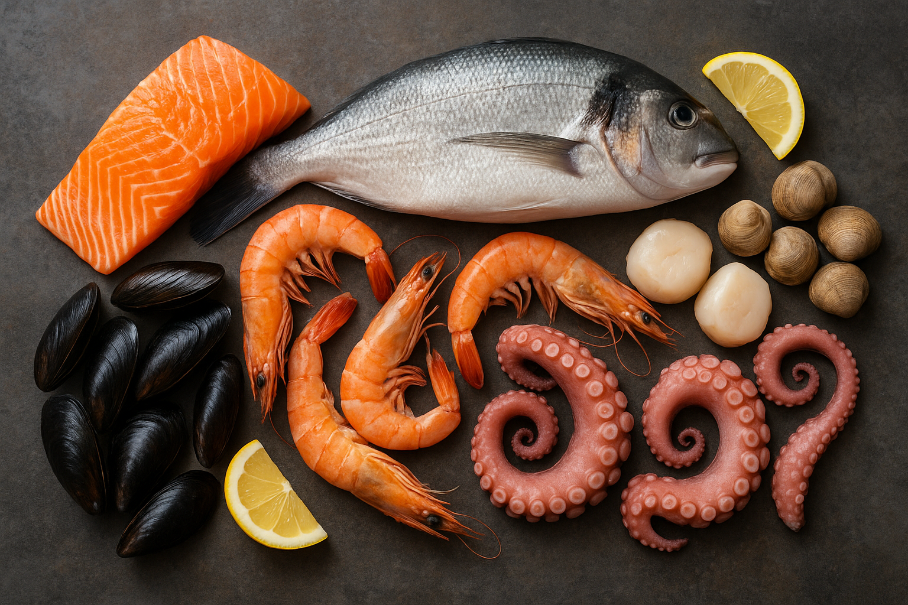

Nutrition Facts
A balanced diet provides essential nutrients that support overall health and well-being. Typically, a healthy meal contains a mix of macronutrients including carbohydrates, proteins, and fats, along with vitamins and minerals. Carbohydrates are the body’s main energy source, ideally making up about 45-65% of daily calories. They include sugars, starches, and fiber — with fiber aiding digestion and promoting a feeling of fullness. Proteins, which contribute 10-35% of daily calories, are vital for muscle repair, enzyme function, and immune health. Sources include meat, dairy, legumes, and nuts. Fats, though calorie-dense, are crucial for brain function, hormone production, and absorbing fat-soluble vitamins (A, D, E, and K). Healthy fats such as unsaturated fats found in olive oil, avocados, and fish should be favored over saturated and trans fats.
Seafood ingredients
Back to top
© Chef Dexter